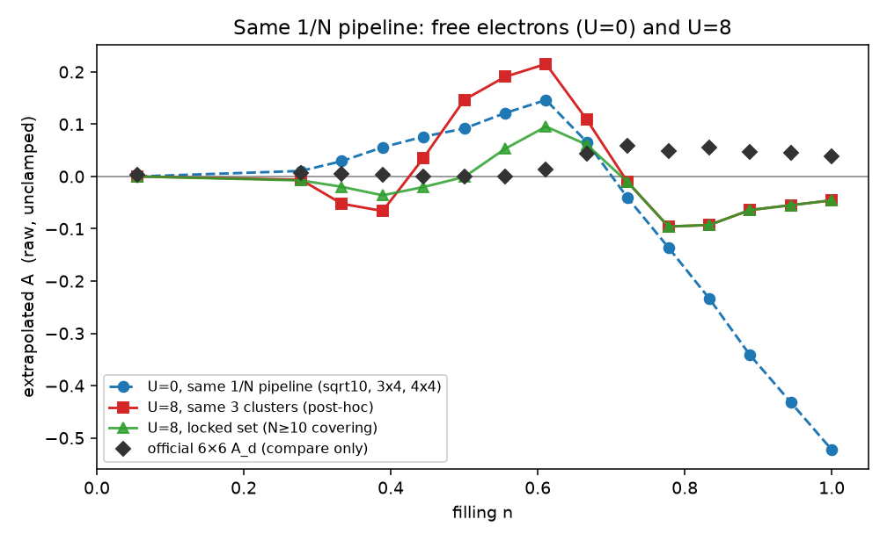

Draft v2.5, 26 November 2026. Author: Liam Dixon. Not submitted. Code and results: this package.
v2 answered a research review (26 Nov 2026). v2.1–v2.3 fixed review items, included the completed 18-site n=0.667 point (reported with and without), restored package reproduce paths, and disclosed that the addendum file was re-saved after that result was known. v2.4 added an optional, off-by-default ED estimate_pairing() (ed_pairing.py; OSC_ED_PAIRING=1 to enable). This v2.5 fixes the opt-in wrapper so it writes a labelled ED calibration file, not a mislabelled submission, and keeps default-off output byte-identical to the official script (exit code, stdout, stderr, JSON). The locked analysis rule is unchanged and labelled; new analyses are labelled post-hoc. Addendum: ed_multisize/PREREGISTRATION_addendum.md.
The Open Superconductor Challenge (OSC) scores each material as N(E_F) × A_d × 300, where A_d is a "pairing amplitude" taken from a table computed with an approximate (variational) method on a 6×6 lattice. We built an exact solver for the same simple model, checked it against an independent published table (all 27 Ku-ku rows; 29 checks, including two 4×4 fillings run with both of our solvers), added two larger lattice shapes, and then estimated how the pairing number changes as the lattice grows, following an analysis plan fixed before any 18- or 20-site result. That size trend, on 10–16-site clusters, has the same up-then-down sign pattern for free electrons as for the interacting model. Free electrons have a nonzero d-wave background even though they have no pairing order; the sign pattern of the 1/N trend is largely a finite-cluster shell and shape effect. At n ≥ 0.8 the magnitudes differ a lot, so the control does not explain the size of the interacting intercepts there. None of this is evidence for or against pairing. Including a later 18-site point at n = 0.667 lowered both positive locked intercepts (0.215 → 0.095 at n = 0.611 and 0.109 → 0.061 at n = 0.667). That is the direction that makes the locked numbers smaller, not larger; the point was not included because it helped a favourite result. The sign pattern, the clamp count (12 of 15 official fillings still clamp to 0), the rank correlation, and all material scores are unchanged. Near half filling the trend gives no evidence for a lasting d-wave amplitude, but the intervals are wide and cannot rule one out either. The rank correlation with the official table is −0.12 (p = 0.66), indistinguishable from zero; the organizers already reported a Spearman of about −0.1 between 4×4 exact results and 6×6 variational ones. This is a validation and calibration reference, not a replacement score. The official table has not been shown to be wrong — only that small-cluster exact diagonalization cannot confirm its pairing "dome."
This analysis was prepared with assistance from AI agents. Every number comes from the deposited code and the files named here.
OSC turns each candidate material into a very simple model, the Hubbard model: electrons hop between neighbouring sites of a square grid, and two electrons on the same site pay an energy cost U (here U = 8 times the hopping, written U/t = 8). How strongly electrons tend to pair in the "d-wave" pattern associated with high-temperature superconductors is summarised by one number, A_d, which depends on how full the band is (the filling n; n = 1 is half filled).
The official A_d table comes from a variational method on a 6×6 grid. Variational methods guess the shape of the answer and can be biased toward the pattern they are looking for. The organizers say this themselves and judge method entries by agreement with exact diagonalization (ED): solving the small model exactly, with no guesswork. Our question: where does the official table agree with exact results on small clusters, and where is the comparison inconclusive?
PREREGISTRATION.md, fingerprint 504a9e21…4564) before any 18- or
20-site number was computed: which grids, how to map a material's filling onto each grid, which number
to measure, how to extrapolate, and that the official table may be compared but never used to adjust
anything. The plan, and the 8–16-site Ku-ku values, were already known when it was written. So the
extrapolation at n ≥ 0.722, which still uses only those already-public clusters, is a planned
analysis but not a blind one. Only results at n ≤ 0.556, which can use the new 18- and 20-site
grids, were blind to the plan. The 18-site point at n = 0.667 was obtained after other results were
already visible; it is included under a rule written before it finished (Addendum, 26 Nov 2026),
and it also covers n = 0.611. Results are reported both with and without it. The timestamps are
local (file times and a LOG.md entry) and are not independently verifiable.estimate_pairing() (ed_pairing.py), off by default. With OSC_ED_PAIRING
unset, the official pairing-index formula is used unchanged: Index = round(N(E_F) × A_d × 300, 3)
with the caller-supplied official A_d. With OSC_ED_PAIRING=1 (or use_ed=True), A_d is replaced
by the locked, clamped 1/N intercept at the material's filling, using the pre-registered rule and
the stored cluster curves. Official osc_instrument.py is not bundled. A thin wrapper
(wrap_osc_instrument.py) can run a fetched copy: with the opt-in off it does not replace
estimate_pairing, and the output is byte-identical to the official script; with it on, n_band
is taken from --n_band, OSC_ED_N_BAND, or automatic lookup in
inputs/materials_canonical.csv, and the file is labelled as an ED calibration, not a
submission. In opt-in mode, 20 of 22 materials score 0. That is not a proposed replacement
(see §6). Tests: ./run_ed_pairing_tests.sh.rerun_check/rerun_small.md), and the locked extrapolation re-runs to
byte-identical files.Raw finite-grid numbers. At fillings where many top OSC materials sit (n ≈ 0.7–1.0), the exact pairing number is positive on every grid of 10 or more sites and is smaller on the larger grids. Example at n = 0.833: 10 sites 0.082, 12 sites 0.057, 16 sites 0.016. The 10- and 16-site figures are interpolated between computed fillings; only the 12-site cluster has n = 0.833 as a computed point. Ku-ku already warn that clusters with different shapes and different measurement distances "are not a strict finite-size sequence," and that on these sizes "only the sign and ranking of the 4×4 values" should be treated as usable for calibration. sqrt10 and 3×4 both measure at distance √5; 4×4 measures farther away, at 2√2, so part of the "shrinks with N" trend is "measured farther apart."
Locked result (planned rule: 1/N, N ≥ 10, clamp negatives to 0). For comparison with the official table only; this is not a proposed replacement:
| filling n | locked A_d (clamped) | official A_d | comment |
|---|---|---|---|
| 0.06–0.50 (6 fillings) | 0 (raw intercept negative) | 0–0.007 | both near zero; a weak test |
| 0.556 | 0.053 | 0 | locked intercept positive; very wide uncertainty (see below); unchanged by the 18t point |
| 0.611 | 0.095 | 0.013 | with 18t n=0.667 (4 sizes). Without that point: 0.215 (3 sizes; pulled up by the 10-site value) |
| 0.667 | 0.061 | 0.043 | with 18t n=0.667 (4 sizes; 18t P_org = 0.0216). Without that point: 0.109 (3 sizes) |
| 0.72–1.00 (6 fillings) | 0 (raw intercept negative) | 0.038–0.058 | official "dome"; locked intercepts negative; 18t does not cover these fillings |
Post-hoc: the same pipeline at U = 0 (free electrons). The raw d-wave correlation at R_max is not zero for free electrons: it has a non-interacting background (Ku-ku's U=0 values run from 0 up to 0.3), even though free electrons have no pairing order. On the same three clusters (10, 12 and 16 sites) the 1/N trend of that background has the same up-then-down sign pattern as at U=8 — positive at n = 0.56–0.67 and negative from n = 0.72 to 1.0:
| n | U=0 intercept | U=8 intercept (same 3 clusters) | official A_d |
|---|---|---|---|
| 0.556 | +0.121 | +0.191 | 0 |
| 0.611 | +0.146 | +0.215 | 0.013 |
| 0.667 | +0.066 | +0.109 | 0.043 |
| 0.722 | −0.041 | −0.011 | 0.058 |
| 0.833 | −0.234 | −0.093 | 0.056 |
| 1.000 | −0.523 | −0.046 | 0.038 |
The sign pattern is therefore largely a finite-cluster shell and shape effect, not pairing physics. At n ≥ 0.8 the magnitudes differ a lot (the free-electron intercept is much more negative), so the control does not account for the size of the interacting values there. The U=0 intercepts are three-point fits with no uncertainty reported here. Neither the clamped zeros nor the positive intercepts can be read as evidence for or against pairing.

Post-hoc: unclamped intercepts and uncertainty. At n = 0.611 and 0.667 the locked fit now uses four points (including 18t). At n ≥ 0.722, where most of the materials sit, it still uses three points, two parameters and one degree of freedom. A 95% interval (t-distribution, 1–3 d.f.; 1 d.f. at n ≥ 0.722, 2 d.f. at n = 0.556, 0.611 and 0.667, and 3 d.f. at n ≤ 0.5) includes positive values at 14 of 15 official fillings. The clamp to zero hides that uncertainty. Sensitivity checks (all post-hoc):
Rank correlation. For the locked, clamped A_d versus the official table, Spearman ρ = −0.12 over 15 fillings, p = 0.66 (permutation p = 0.68). The 95% interval is about −0.60 to +0.42 (Fisher z) or −0.55 to +0.32 (bootstrap). That is no detectable relationship in either direction, not an "opposite ordering." Twelve of the 15 exact values are tied at 0, so the statistic mostly reflects how ties are handled. The number is also sensitive to choices: unclamped intercepts versus official, ρ = −0.48 (p = 0.07); the 10-site values alone versus official, ρ = +0.73 (p = 0.002); 4×4 alone, ρ = −0.01. The organizers already published the core finding: their 6×6 variational A_d and the 4×4 exact values are "essentially uncorrelated across filling (Spearman ≈ −0.1)." What we add is a multi-size extension of that comparison.
Materials (22 candidates, official band choice; comparison only, not a rescoring). Under the locked clamp, 20 of 22 get A_d = 0. The two exceptions sit at n ≈ 0.70–0.71, at the edge of the three-point fits, and their intercepts have uncertainties large enough to include zero (Appendix E). We do not propose replacing official pairing indices with these numbers.
How to read this against the official estimate. At low filling (n ≤ 0.5) both the official table and the exact-cluster trend are consistent (both near zero); that is a weak test. In the official "dome" (n ≈ 0.72–1.0) the two disagree in sign of the locked intercept, but the U=0 control, the wide intervals and the 4×4 sensitivity mean we cannot confirm the official dome and cannot rule it out. The official table has not been shown to be wrong.
A disagreement in the dome is also expected on other grounds. Near 1/8 hole doping (n = 0.875) the pure Hubbard model's ground state has period-8 stripes (Zheng et al., Science 358, 1155 (2017)), which cannot fit on 10–16-site clusters, and the official 6×6 method is a d-wave variational ansatz, which is biased toward pairing. At n = 1 the model is a Mott insulator, where pairing is not expected. In the narrower window n ≈ 0.8–0.9 (10–20% hole doping), our small-cluster trend is consistent with the large-scale finding of Qin et al., Phys. Rev. X 10, 031016 (2020), of only short-range pairing at U/t ≈ 6–8; it is not a validation of that result, because small-cluster ED cannot see the stripes Qin et al. found.
It is a reproducible exact solver, checked against two independent sources, plus a limited size study
and a U=0 control that changes how the size trend should be read. It is not a request to change any
official score, and it does not change the canonical pipeline. An optional ED estimate_pairing() is
included so anyone can test the method inside the official instrument; it is off by default.
When the wrapper's opt-in is off, it runs the official script without replacing estimate_pairing,
and the exit code, stdout, stderr and JSON are byte-identical to running the official file directly.
When it is on, the output is labelled as an ED calibration, not a submission, and 20 of 22 materials score 0 (the exceptions
are AuBrI3Mn, 21.3 vs official 31.5, and Mn2I2S, 12.0 vs official 64.0). We do not propose using those
numbers as replacement scores: the clusters are small (8–20 sites; no 18- or 20-site data above
n = 0.667), the unclamped intervals are wide and usually include both signs, the dome-region fit is
sensitive to dropping 4×4, and the U=0 control shows that the clamp is not a pairing measurement.
The planned 18-site point at n = 0.667 was left out of the first locked run after two memory-watchdog
aborts, after the other results were already visible. The rule, written before a gated retry finished
and recorded in ed_multisize/PREREGISTRATION_addendum.md (this does not edit the locked plan):
if the retry completes, the point is included, and results are reported both with and without it.
The retry completed on 26 Nov 2026, 12:48 PM ET (runs/18t_nup6_U8_k.json, P_org = 0.0216). This
draft includes it. Locked A_d with the point: 0.053 at n = 0.556 (unchanged), 0.095 at n = 0.611
(was 0.215 without it), 0.061 at n = 0.667 (was 0.109). Twelve of 15 fillings still clamp to 0;
Spearman ρ remains −0.12 (p = 0.66); 20 of 22 materials still have A_d = 0; AuBrI3Mn (21.3 vs
official 31.5) and Mn2I2S (12.0 vs official 64.0) are unchanged, because 18t does not cover their
fillings (n ≈ 0.70–0.71). The withheld (without) files are in
ed_multisize/results_without_18t_nup6/. Including the late point lowered both positive
intercepts (0.215 → 0.095, 0.109 → 0.061), which makes the locked numbers smaller, not larger.
The addendum file itself was re-saved after the result was known (the 9:37 AM ET version,
sha256 2070a11e…, was overwritten at 1:28 PM ET when the Outcome section was added; no copy
of that earlier file survives). The inclusion rule was set before the result and is mechanical;
details are in the addendum's disclosure paragraph.
H = −t ∑_i ∑_{d=+x,+y} (c†_{i+d,s} c_{i,s} + h.c.) + U ∑_i n_{i↑} n_{i↓}, t = 1, U = 8,
periodic boundary conditions, S_z = 0 (N_up = N_dn), N_e = 2 N_up.
A length-2 periodic direction counts its bond twice.
Pair operator b_ij = (c_{i↑} c_{j↓} + c_{j↑} c_{i↓})/√2,
Δ_d(i) = (1/2) ∑_{d=±x,±y} g(d) b_{i,i+d}, g(±x) = +1, g(±y) = −1.
P_d(R) = ⟨Δ_d(j)† Δ_d(i)⟩ averaged over all ordered pairs at the largest
minimum-image distance R_max; organizer normalization P_org = 2 P_d.
Degenerate ground states (|E − E0| < 1e-7) are averaged with equal weight.
| cluster | N | vectors | symmetry used | fillings computed | R_max |
|---|---|---|---|---|---|
| 2x4 | 8 | (2,0),(0,4) | none | 0.25–1.0 | √5 |
| sqrt8 | 8 | (2,2),(−2,2) | none | 0.25–1.0 | 2 |
| sqrt10 | 10 | (3,1),(−1,3) | none | 0.2–1.0 | √5 |
| 3x4 | 12 | (3,0),(0,4) | none | 0.167–1.0 | √5 |
| 4x4 | 16 | (4,0),(0,4) | translations + C4v | 0.125–1.0 | 2√2 |
| 18t | 18 | (3,3),(−3,3) | translations + C4v | 0.111–0.667 (n=0.667 completed 26 Nov 2026, 12:48 PM ET; ≥ 0.778 over budget) | 3 |
| 20t | 20 | (4,2),(−2,4) | translations + C4 | 0.1–0.5 (≥ 0.6 over budget) | √10 |
Solvers: real-space sectors (dense below dim 6000, otherwise matrix-free eigsh + Lanczos deflation for the full degenerate multiplet); crystal-momentum sectors with spin-factorized storage of translation-orbit representatives, a two-pass low-memory Lanczos (residual < 1e-8) and point-group star reduction (energies and P_d(R_max) are invariant within a star; verified numerically). Seed 0 for all start vectors. Python 3.13.5, numpy 2.5.5, scipy 1.18.1, one thread, nice 19, memory watchdog. Largest runs: 4×4 n = 1.0, 6.0 h, 2.2 GB; 20t n = 0.5, 7.9 h, 2.5 GB; 18t n = 0.667, 6.5 h cumulative (including earlier checkpointed work), 4.0 GB.
Rule fixed before comparing: |ΔE0| ≤ 2e-8 (Ku-ku prints 8 decimals), |ΔP_org| ≤ 1e-5|ref| + 1e-8, same
degeneracy and R_max. Outcome: all 27 unique Ku-ku rows match, 29 checks in total
(ed_solver/results/ed_check.md). Largest |ΔE0| is 9.6e-9; largest |ΔP_org| is 3.9e-7 (3×4 n = 0.5 and
2×4 n = 0.75), within the truncation of the printed reference. 4×4 rows: n = 0.625 P_org 0.060121946
(ref 0.0601219), n = 0.75 0.009831081 (0.00983108, deg 2), n = 0.875 0.019219006 (0.019219, deg 3),
n = 1.0 0.0061970903 (0.00619709).
Locked rule (PREREGISTRATION.md): n_eff = n_band (or 2 − n_band above half filling); linear
interpolation per cluster between computed fillings with P(0) = 0, and no extrapolation beyond a
cluster's highest computed filling; P_org(N) = A + B/N by unweighted least squares over clusters with
N ≥ 10 covering n, used only with at least 3 sizes; A_d = max(0, A). Reported, never substituted:
8-site values, residual, spread, alternative A + B/N^1.5. Official table compare-only. Implementation
choices not fixed by the plan are listed in ed_multisize/results/extrapolation.md.
Locked clamped A_d (this is the planned result; raw A is in the next table):
| n | locked A (1/N) | locked A_d = max(0, A) | official A_d | sizes |
|---|---|---|---|---|
| 0.500 | −0.0009 | 0 | 0 | 5 |
| 0.556 | 0.053 | 0.053 | 0 | 4 |
| 0.611 | 0.095 | 0.095 | 0.013 | 4 (was 0.215 / 3 sizes without 18t) |
| 0.667 | 0.061 | 0.061 | 0.043 | 4 (was 0.109 / 3 sizes without 18t) |
| 0.722 | −0.011 | 0 | 0.058 | 3 |
| 0.833 | −0.093 | 0 | 0.056 | 3 |
| 1.000 | −0.046 | 0 | 0.038 | 3 |
Post-hoc uncertainty and sensitivity (not in the plan). SE and 95% CI use the t-distribution with
d.f. = (number of sizes) − 2. With 3 sizes, each leave-one-out value is a 2-point line and is only a
sensitivity check. "A at N=36" is the locked 1/N line evaluated at the official cluster size (a
fairer comparison than large-grid intercept vs finite 6×6). Full CSV: ed_multisize/results/posthoc_by_filling.csv.
| n | A (1/N) ± SE | 95% CI (t) | A (1/√N) | drop 4×4 | A at N=36 | official |
|---|---|---|---|---|---|---|
| 0.500 | −0.001 ± 0.091 | [−0.29, 0.29] | −0.044 | −0.015 | 0.012 | 0 |
| 0.556 | 0.053 ± 0.131 | [−0.51, 0.62] | 0.067 | 0.015 | 0.043 | 0 |
| 0.611 | 0.095 ± 0.105 | [−0.35, 0.55] | 0.157 | 0.057 | 0.069 | 0.013 |
| 0.667 | 0.061 ± 0.038 | [−0.10, 0.22] | 0.091 | 0.043 | 0.048 | 0.043 |
| 0.722 | −0.011 ± 0.028 | [−0.36, 0.34] | −0.057 | +0.052 | 0.005 | 0.058 |
| 0.778 | −0.096 ± 0.005 | [−0.16, −0.03] | −0.233 | −0.084 | −0.048 | 0.048 |
| 0.833 | −0.093 ± 0.011 | [−0.23, 0.04] | −0.232 | −0.068 | −0.044 | 0.056 |
| 0.889 | −0.064 ± 0.009 | [−0.18, 0.05] | −0.166 | −0.085 | −0.028 | 0.047 |
| 0.944 | −0.055 ± 0.021 | [−0.32, 0.21] | −0.135 | −0.103 | −0.026 | 0.045 |
| 1.000 | −0.046 ± 0.033 | [−0.46, 0.37] | −0.104 | −0.120 | −0.024 | 0.038 |
At n = 0.611 and n = 0.667 the locked fit uses 4×4, 3×4, sqrt10 and 18t (four sizes). Without the
18t point those intercepts were 0.215 and 0.109, with much wider intervals (n = 0.611: 0.215 ± 0.126,
[−1.38, 1.81]; n = 0.667: 0.109 ± 0.035, [−0.34, 0.55]; 1/√N 0.386 and 0.184; drop-4×4 0.502 and
0.188; A at N=36 0.152 and 0.081). At n ≥ 0.722 the fit still uses only 4×4, 3×4 and sqrt10.
The withheld (without 18t) tables are in ed_multisize/results_without_18t_nup6/.
Under the locked clamp, 20 of 22 materials get A_d = 0. The two with a positive locked intercept sit
near n = 0.70, where the three-point 95% interval includes zero (and, at nearby official fillings,
leaving out 4×4 can flip the sign). We do not report a replacement Pairing Index in the main text.
Details are in ed_multisize/results/posthoc_materials.csv and the locked ed_multisize/results/extrapolation_materials.csv.
S. Haastrup et al., 2D Mater. 5, 042002 (2018); M. N. Gjerding et al., 2D Mater. 8, 044002 (2021) (C2DB).
M. Qin, C.-M. Chung, H. Shi, E. Vitali, C. Hubig, U. Schollwöck, S. R. White, S. Zhang, "Absence of
Superconductivity in the Pure Two-Dimensional Hubbard Model," Phys. Rev. X 10, 031016 (2020),
https://doi.org/10.1103/PhysRevX.10.031016 (open access, CC-BY).
B.-X. Zheng et al., "Stripe order in the underdoped region of the two-dimensional Hubbard model,"
Science 358, 1155 (2017), https://doi.org/10.1126/science.aam7127.
H. Q. Lin, "Ground-state properties of the two-dimensional Hubbard model," Phys. Rev. B 44, 7151 (1991).
T. Tohyama, Y. Inoue, K. Tsutsui and S. Maekawa, Phys. Rev. B 72, 045113 (2005).
OSC dataset FINAL-Bench/OSC-Superconductor (rev 346f184d), including Ku-ku's validation tables
(CC-BY-NC 4.0); Tuli99, OSC discussion #59 (opened 20 October 2026; organizer reply 21 October).
Full list: CITATIONS.md.